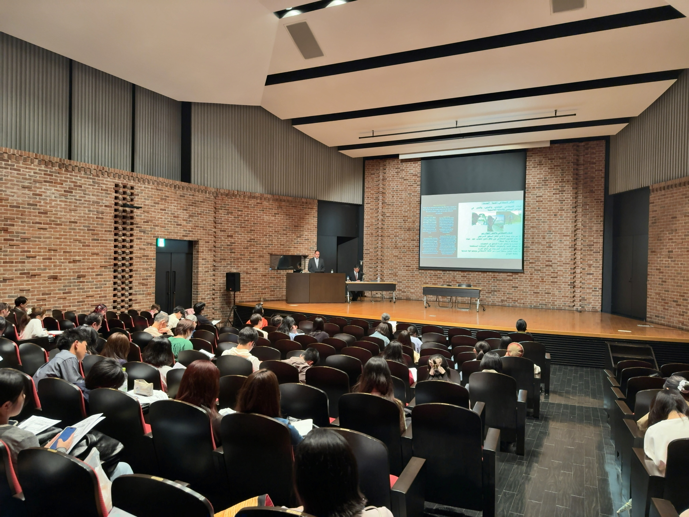

Get in touch
I welcome enquiries about research collaboration, teaching and supervision, consultancy and training, invited lectures, and media or policy requests.
Please use the form below or write to me directly, and tell me briefly who you are and what you need. I aim to reply [add response time].
- Based in
- Cambridge
- Affiliation
- Affiliated Lecturer, Cambridge Digital Humanities, University of Cambridge (2026–27); Founder and Director, Frontline World Ltd
- Languages
- Arabic, English, German
What would you like to discuss?
Each route links to the page that explains it.
-
Research collaboration or visiting opportunities
Joint projects, visiting research and interdisciplinary networks.
Research -
Teaching, supervision or guest lectures
Lectures, seminars, course development and academic exchange.
Teaching & Supervision -
Consultancy, training or commissioned work
Studies, institutional advice, workshops and training days.
Services & Offers -
Interviews, expert comment or briefings
Media and policy requests on communication, conflict, AI and higher education.
News & Engagement
Open to
- Research collaborations
- Academic partnerships
- Speaking invitations
- Media requests
- PhD & postgraduate supervision inquiries
- Conference participation
- Consulting & advisory opportunities

Commissioned work and larger projects
Studies, advisory work, training and larger programmes are described in Services & Offers, and larger projects are delivered through Frontline World.